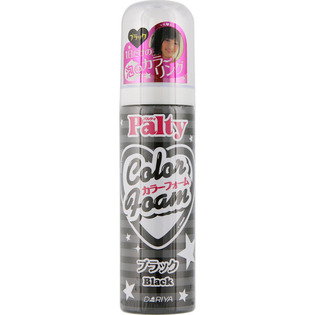

返回列表
产品名称：パルティ カラーフォーム ブラック

ダリヤ パルティ カラーフォーム ブラック ４０ｇ
メーカー ダリヤ
JANコード 4904651180653
商品の特徴
１日だけの泡のカラーリング
- 成分・分量
- 【成分】
水、エタノール、ＬＰＧ、（アクリル酸アルキル／ジアセトンアクリルアミド）コポリマーＡＭＰ、ベントナイト、アクリル酸アルキルコポリマーアンモニウム、ジメチコン、（ジメチルアクリルアミド／アクリル酸ヒドロキシエチル／アクリル酸メトキシエチル）コポリマー、セテス－１５、ツバキ油、パンテノール、メチルパラベン、ヤシ油脂肪酸ＰＥＧ－７グリセリル、ラウラミドＤＥＡ、ラウレス－２、ラウレス－２１、香料、カーボンブラック、酸化鉄
- 用法及び用量
- 【使用方法】
１．ご使用前に玉の音がしてから上下に１０回以上よく振ります。
２．缶を下向きにして泡をブラシ等にとり、髪に伸ばしブラッシングします。
３．落とす時はシャンプーでよく洗ってください。もし落ちない場合は石けんをご使用ください。